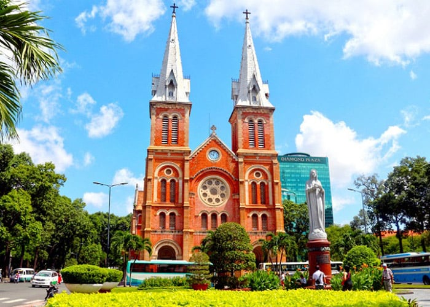
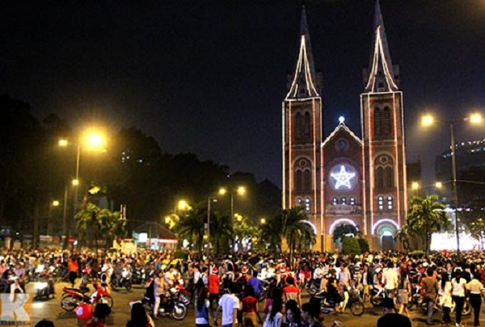

Nhà thờ Đức Bà
Mục lục các địa điểm
Giới thiệu về Nhà thờ Đức Bà
Nhà thờ Đức Bà là ngôi nhà thờ thứ hai được Pháp lập nên bên bờ kinh Lớn (hay kinh Charner) ngay từ những ngày đầu chiếm Sài Gòn. Khu vực này hiện nay là quảng trường Công xã Paris, trung tâm TPHCM. Ngôi nhà thờ đầu tiên được lập nên ở đường số 5 (nay là Ngô Đức Kế, Quận 1), nơi đây vốn là một ngôi chùa của người Việt. Vì chiến tranh và quân xâm lăng đến trú đóng nên người Việt bỏ chạy, cố đạo Lefebvre đã biến ngôi chùa này thành nhà thờ. Và vì nhà thờ đầu tiên này quá nhỏ nên Pháp đã lập ngôi nhà thờ thứ hai là nhà thờ Đức Bà. Nhà thờ Đức Bà Sài Gòn được xây dựng vào ngày 7 tháng 10 năm 1877. Nhà thờ được xây dựng bởi Giám mục Isodore Comlombert, theo lối kiến trúc kết hợp phong cách Roman và Gothic. Nhà thờ Đức Bà là trung tâm Công giáo lớn nhất thành phố, cũng là điểm du lịch hàng đầu thu hút rất nhiều du khách trong nước và quốc tế tới tham quan, hành lễ và nguyện cầu.

Nhà thờ Đức Bà
Tòa thánh đường Nhà thờ Đức Bà: Thánh đường là khu chính được thiết kế đặc biệt, rộng nhất tại nhà thờ với sức chứa hơn 1.200 người. Chiều dài của thánh đường là 93m, rộng 35m, chiều cao của mái vòm gần 21m với thiết kế gồm lòng chính, hai lòng phụ và hai bên là hai dãy nhà nguyện.
Các bàn thờ bên trong Nhà thờ Đức Bà: Đều được khắc bằng đá cẩm thạch nguyên khối, 56 ô cửa kính nhiều màu sắc ghép lại với nhau. Các ô cửa này mô tả nhân vật và sự kiện trong kinh thánh.
Tháp chuông của Nhà Thờ Đức Bà Sài Gòn: Năm 1895 hai tháp chuông Nhà thờ Đức Bà được thi công xây dựng sau khi hoàn tất nhà thờ 15 năm, tháp chuông được thiết kế bởi kiến trúc sư Gardes. Tháp chuông cao 57m với 21m là mái vòm.
Địa chỉ Nhà thờ Đức Bà
Nhà thờ Đức Bà là cách gọi ngắn gọn của Nhà thờ chính tòa Đức Bà Sài Gòn, có tên chính thức là Vương cung thánh đường chính tòa Đức Mẹ Vô nhiễm Nguyên tội. Nhà thờ Đức Bà ở quận mấy? Nhà thờ Đức Bà địa chỉ tại Công trường Công Xã Paris, Phường Bến Nghé, Quận 1, TP. Hồ Chí Minh.

Nhà thờ Đức Bà chính là biểu tượng của thành phố Sài Gòn
Cách di chuyển đến Nhà thờ Đức Bà
Tọa lạc tại trung tâm quận 1, nhà thờ Chính tòa Đức Bà là địa điểm mà bất kỳ “thổ địa” nào ở TP. Hồ Chí Minh cũng biết. Vì vậy, du khách có thể tìm đến nhà thờ bằng các phương tiện cá nhân hoặc công cộng như xe ôm, xích lô hoặc xe bus, taxi,... với chi phí rất hợp lý. Nếu đi bằng phương tiện cá nhân, bạn đi theo hướng dẫn bản đồ chỉ đường đến địa chỉ nhà thờ Đức Bà Sài Gòn rồi gửi xe tại trường Hòa Bình, Hội trường Thống nhất hoặc Nhà văn hóa Thanh Niên đều được. Nếu lựa chọn di chuyển bằng taxi thì TP. Hồ Chí Minh có rất nhiều hãng taxi cho du khách lựa chọn. Để có trải nghiệm tốt nhất thì du khách có thể tham khảo hãng taxi XANH SM. Taxi XANH SM - hãng taxi thuần điện đầu tiên tại Việt Nam, vận hành hoàn toàn bằng ô tô điện VinFast. Lựa chọn di chuyển bằng taxi Xanh SM, khách hàng không chỉ được trải nghiệm chất lượng dịch vụ khác biệt mà còn đang chung tay cùng hãng trong mục tiêu nỗ lực giảm thiểu phát thải từ phương tiện giao thông, bảo vệ môi trường. Tại Hồ Chí Minh, XANH SM đang cung cấp dịch vụ taxi tiêu chuẩn và taxi cao cấp cùng gói cước di chuyển 2 chiều với ưu đãi lên tới 60% chiều về.

Bản đồ nhà thờ Đức Bà
Khám phá Nhà thờ Đức Bà
Vé vào cừa nhà thờ miễn phí. Du khách có thể đến Nhà thờ Đức Bà vào bất cứ thời điểm nào trong ngày, kể cả buổi tối vẫn rất đông. Tuy nhiên, muốn vào được bên trong thì bạn phải đến đúng dịp giờ: Giờ mở cửa nhà thờ Đức Bà: 5h00 đến 20h00 Giờ lễ Nhà Thờ Đức Bà: - Từ thứ 2 đến thứ 7: 5h30; 17h30 - Chủ nhật: 5h30; 6h45 ;8h00 ;9h30 (thánh lễ bằng tiếng Anh); 16h00; 17h15; 18h30 Nếu không tham gia các lễ, bạn cần 90 phút đến 2 tiếng để tham quan, chụp ảnh và thưởng thức các món ăn hấp dẫn nơi đây. Bạn có thể kết hợp tham quan Nhà thờ Đức Bà với rất nhiều địa danh nổi tiếng trong khu vực trung tâm như Chợ Bến Thành, nhà hát thành phố, bưu điện thành phố Hồ Chí Minh,... Hoặc đến mua sắm tại các trung tâm như Diamond Plaza, Vincom,...

Nhà thờ Đức Bà rực rỡ và nhộn nhịp đêm Noel
Nhà thờ Đức Bà là địa điểm du lịch hấp dẫn tại thành phố Hồ Chí Minh mà du khách nên ghé đến. Nơi đây không chỉ là một công trình kiến trúc nghệ thuật nổi tiếng mà còn là nhân chứng lịch sử của Sài Gòn, đã chứng kiến bao biến động, sự thay đổi và phát triển của thành phố trẻ này. Bởi vậy, nơi đây luôn thu hút hàng triệu lượt du khách trong và ngoài nước mỗi năm. Để có được trải nghiệm du lịch hoàn hảo nhất khi ghé thăm nhà thờ Chính tòa Đức Bà Sài Gòn và các địa danh nổi tiếng tại TP.HCM, du khách nên tìm một địa chỉ lưu trú tiện nghi, hiện đại. VàVinpearl Landmark 81, Autograph Collection chắc chắn là địa chỉ lưu trú hoàn hảo cho du khách với chất lượng dịch vụ tốt, tích hợp nhiều tiện nghi cao cấp.
Hy vọng rằng những thông tin trên sẽ giúp cho bạn hiểu hơn và cảm thấy hứng thú với Nhà thờ Đức Bà